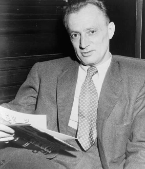
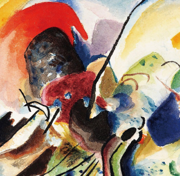
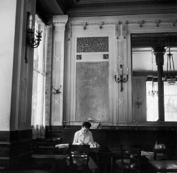

을유 소식
-
연애편지 미리보기
#5. 보부아르가 넬슨 올그런에게 보낸 마지막 편지
1964년 11월 매우 소중한 당신. 어떤 편지도 부치지 않고, 어떤 편지도 오지 않는 영원 같은 시간이 흘렀어요. 당신에 관한 몇 가지 소식이 새어 들어왔어요. 당신이 『더 네이션』에 쓴 〈폴라무르 박사〉의 시나리오 작가(그의 이름을 잊어버렸어요)에 대한 훌륭한 글과, 또 어떤 잡지에서였는지 기억나지 않지만 여인들과 사랑, 결혼 등에 관해 나눈 흥미진진한 인터뷰들이요. 알랭인가, 세르주인가가 당신이 매우 고상한 의상을 걸치고 다닌다고 일러 주던데, 정말 당신이 맞아요?
-
을유세계문학전집
128권. 르네 샤르, 『격정과 신비』20세기 프랑스를 대표하는 시인
『격정과 신비』를 이루는 한 축인 ‘격정’은 시로 쓴 저항과 연대의 기록을 시사한다. 르네 샤르는 스페인 내전과 제2차 세계 대전이라는 역사의 소용돌이 속에서 참상을 목격하고 몸소 겪어 냈다. 제2차 세계 대전 중 독일에 포위당한 프랑스에서 레지스탕스에 적극적으로 가담했던 시인은 어두운 현실을 마주하되 절망감에 매몰되지 않았다. 휴머니즘을 바탕으로 그는 분노하고 고발하고, 자연과 인간을 보면서 삶의 희망과 경탄을 느꼈다.
-
연애편지 미리보기
#3. 모든 것을 다 줄 준비가 되어 있지 않으면서 자신의 일부를 준다는 게 옳은 일인가?
1947년 7월 23일 수요일 우리는 추억과 희망을 통해, 그리고 떨어져 있는 거리와 편지를 통해 서로를 사랑하고 있어요. 우리가 이 사랑을 인간적이고 살아 있는 행복한 감정으로 만들 수 있을까요? 그래야만 해요. 저는 우리가 성공하리라 믿지만, 쉽지 않을 거예요. 넬슨, 사랑해요. 그러나 당신에게 저의 인생을 주지 않으니 제가 당신의 사랑을 받을 자격이 있을까요? 왜 당신에게 제 인생을 줄 수 없는지를 설명하려고 했어요. 그걸 이해하나요? 그에 대해 원망하지 않나요? 결코 원망하지 않을 건가요? 그럼에도 불구하고 당신을 향한 사랑이 진심이라는 걸 여전히 믿으시겠어요?
-
연애편지 미리보기
#2. 당신의 온 존재와 함께할 거예요.
1947년 5월 17일 토요일 오후, 뉴펀들랜드 KLM 비행기에서 상냥하고 기막히게 멋진 사랑하는 나의 ‘토박이 젊은이’, 당신은 저를 또 한 번 울게 했어요. 그러나 달콤한 눈물, 당신에게서 오는 그 모든 것이 그렇듯이 달콤한 눈물을 흘리게 했지요. 저는 막 비행기 안에 자리를 잡곤 당신의 필체를 보고 싶은 마음에 당신에게 무언가를 써 달라고 부탁하지 않은 걸 후회하면서 당신 책의 첫 장을 넘겼어요. 아, 거기엔 당신의 정답고 사랑스럽고 아름다운 문장들이 있었지요. 나는 비행기의 둥근 창에 이마를 대고 푸른 바다 위에서 울었어요. 그러나 달콤한 눈물, 사랑의 눈물, 우리 사랑의 눈물이었지요. 당신을 사랑합니다.
-
연애편지 미리보기
#1. 보부아르가 넬슨 올그런에게 보낸 첫 번째 편지
1947년 2월 23일 토요일 저녁, 캘리포니아행 기차에서 친애하는 넬슨 올그런 씨. 영어로 편지를 써 보도록 하겠어요. 그러니 저의 서툰 문법 실력을 용서해 주시고, 단어를 올바르게 사용하지 않더라도 이해해 주세요. 게다가 저의 글씨체는 워낙 알아보기가 힘들고, 더욱이 저는 달리는 기차 안에서 쓰고 있답니다. 당신과 헤어지고 나서 곧 호텔에서 기사 하나를 마쳤어요. 별로 잘 쓰지 못했답니다. 걱정되는군요. 할 수 없지요. 당신과의 저녁 식사를 방해한 그 증오스러웠던 프랑스인들과 저녁 식사를 했습니다. 그리고 저는 당신에게 전화를 했고, 그들은 저를 열차에 태웠어요.
-
보이지 않는
#3. 보이지 않는 빛, 보이지 않는 괴물
보이지 않는 빛이 물리학의 큰 그림에 어떻게 들어맞는지 더 잘 이해하기 위해서는 더 많은 세월이 필요했다. 그러나 이전에는 상상할 수 없었던 숨겨진 현상의 세계가 있다는 생각은 금방 퍼져 나갔다. 눈에 보이지 않는 빛이 존재한다면 보이지 않는 물질도 존재하지 않을까? SF와 공포 소설 작가들이 가장 먼저 새로운 물리학을 이용해 남들에게 보이지 않을 수 있는 능력을 구현하거나 설명할 수 있는 방법에 대해 생각했다. 보이지 않는 빛을 제일 먼저 이러한 방식으로 사용한 사람은 군인, 기자, 소설가 겸 풍자 작가 앰브로즈 비어스(1842~1914)였다.